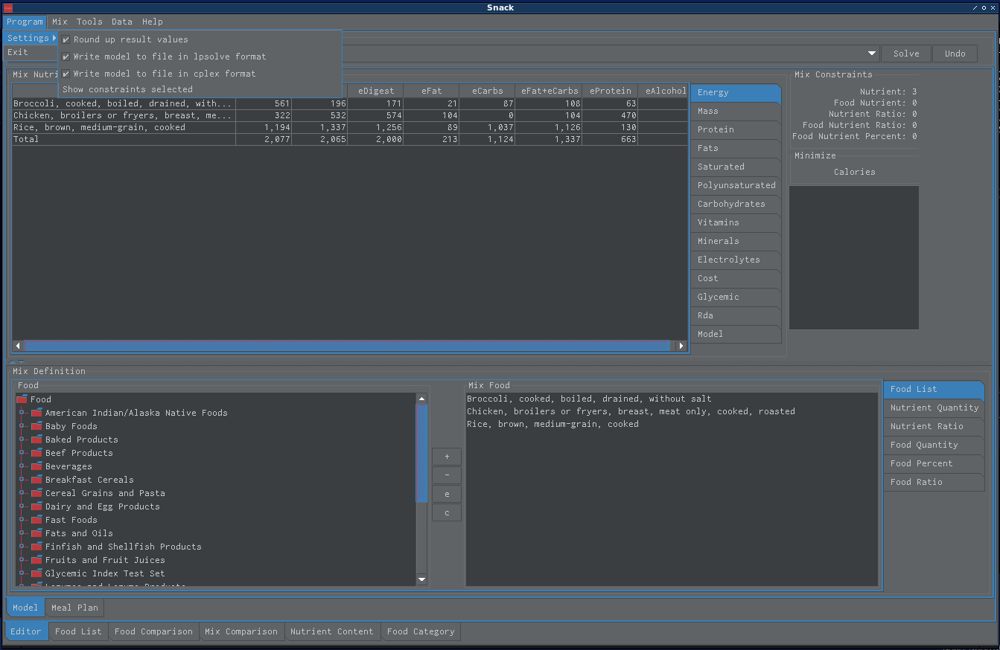
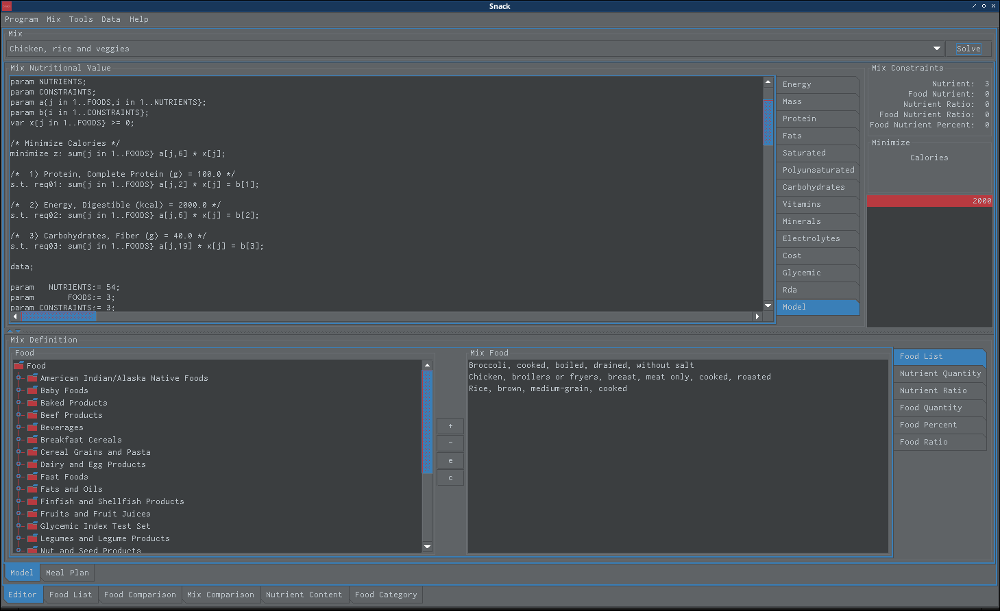
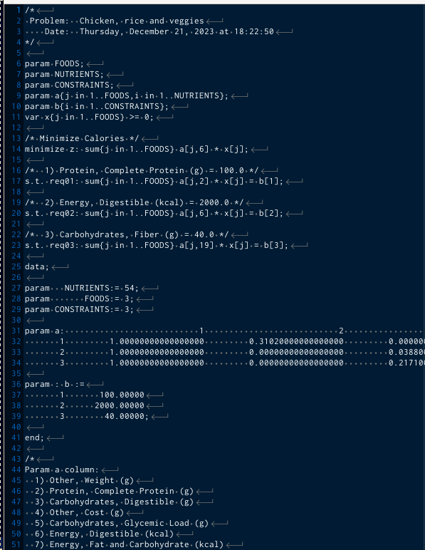
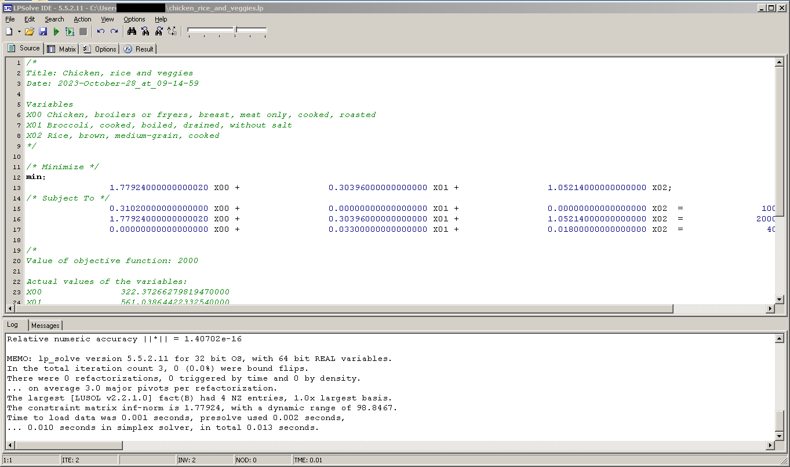
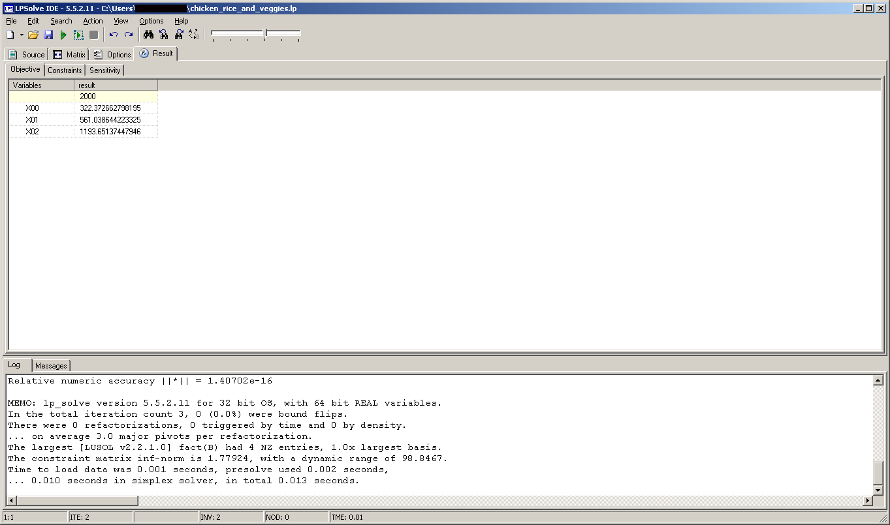
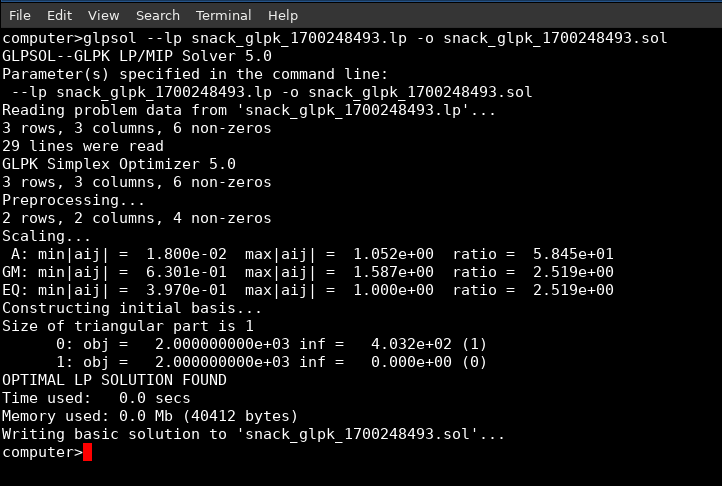
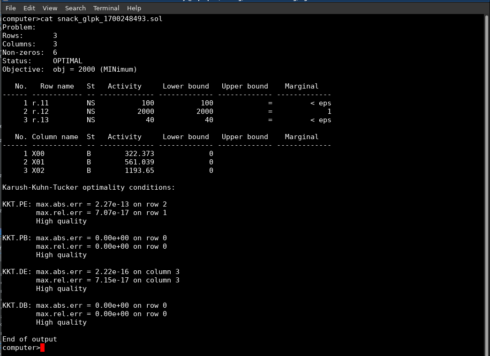
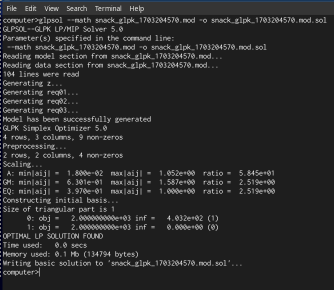
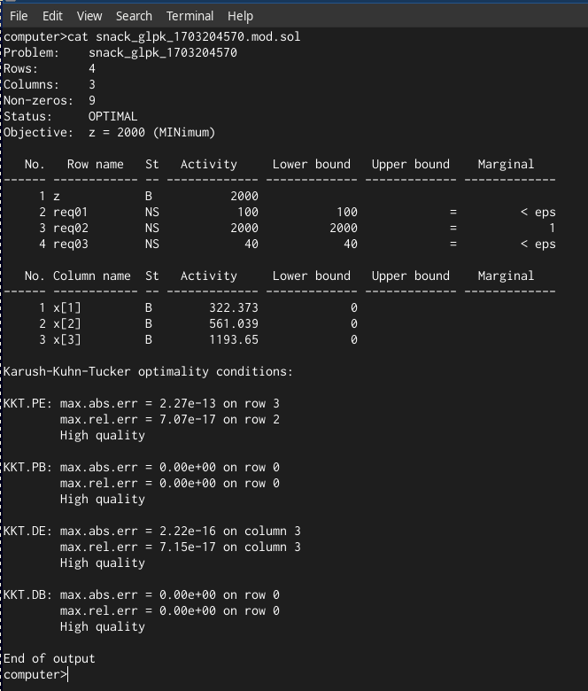

Model¶
Writing Model to File¶

A model file will be written to file every time a Snack finds a solution¶
The Linear Program Model View¶

This is the linear program model view¶
The Linear Program Model¶

This is the linear program output generated by Snack that is saved to the log file¶
LPSOLVE LP format example¶
An Example File
For example, user could use the following command to solve problem in linux
lp_solve -S3 chicken_rice_and_veggies.lp

The chicken, rice and veggies mix problem using lpsolve for linux¶
On windows, user can use lpsolve for windows

The chicken, rice and veggies mix problem on lpsolve for windows¶

The result of the chicken, rice and veggies mix problem using lpsolve for windows¶
CPLEX LP format example¶
An Example File
For example, user could use the following command to solve problem in linux
glpsol –lp snack_glpk_1700248493.lp -o snack_glpk_1700248493.lp.sol
Solving The Problem

The chicken, rice and veggies mix problem using glpk solver on linux¶
The Solution

The chicken, rice and veggies mix solution generated by glpsol on linux¶
GNU MathProg modeling language example¶
An Example File
For example, user could use the following command to solve problem in linux
glpsol –math snack_glpk_1703204570.mod -o snack_glpk_1703204570.mod.sol
Solving The Problem

The chicken, rice and veggies mix problem using glpk solver on linux¶
The Solution

The chicken, rice and veggies mix solution generated by glpsol on linux¶